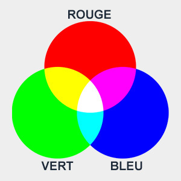
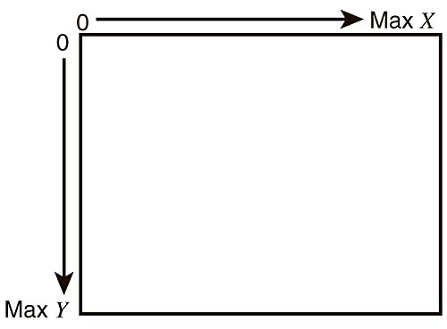

Chapitre 3: Des boutons et du texte.
1. Les couleurs en informatique.
Note
En informatique, nous utilisons les couleurs de bases dites RGB en anglais (Rouge (Red), Vert (Green), Bleu (Blue)).
Pour représenter une couleur, il faut combiner les différentes intensités de ces trois couleurs de base.

Info
La valeur numérique d'une composante de base (R, G et B) est une valeur numérique entre 0 et 255.
0 signifie aucune intensité de couleur, et 255 signifie une intensité maximale.
Pour obtenir une couleur spécifique il faut combiner les trois valeurs de rouge, vert et bleu.
Par exemple, le blanc pur est obtenu en ayant les trois composantes à 255 (255, 255, 255), tandis que le noir pur est obtenu en ayant toutes les composantes à 0 (0, 0, 0).
Success
Dans Pybot, nous associons les trois valeurs RGB dans une variable selon l'exemple ci-dessous:
variable = (R, G, B)
couleur_violette = (128, 0, 128)
couleur_noir = (0, 0, 0)
couleur_blanc = (128, 0, 128)
couleur_orange = (255, 127, 0)
Note
Vous pouvez utiliser un selectionneur de couleur pour trouver une couleur spécifique. Par exemple ce site.
2. Afficher la couleur du fond d'écran et la changer.
Pour changer la couleur du fond d'écran on utilise la méthode robot.couleur_fond(couleur) ou couleur est au format variable = (R, G, B).
Success
robot.couleur_fond(couleur)
Pour afficher cette couleur il faut utiliser une autre méthode robot.afficher_fond().
Success
robot.afficher_fond()
3. Créer un bouton.
Créer et retourner un bouton qui peut être affiché et vérifié plus tard :
Success
robot.creer_bouton(longueur, hauteur, position_x, position_y, couleur)
Les paramètres attendus sont :
* la longueur et la hauteur du bouton.
* la position x et y du bouton (son coin en haut à gauche).
* la couleur du bouton.
Les positions x et y sur l'écran
Les coordonnées sur un écran informatique sont généralement définies à partir du coin supérieur gauche.
Le premier pixel qui se trouve en haut à gauche correspond aux coordonnées x = 0 et y = 0.
Alors que le dernier pixel en bas à droite correspond à la coordonnée x maximale et à la coordonnée y maximale.
Par exemple, si l'écran fait 300 pixels de long et 200 pixels de haut. Le dernier pixel a les coordonnées x = 299 et y = 199.

4. Ajouter un texte au bouton.
Success
bouton.ajouter_texte(self, texte, position_x, position_y, taille, couleur)
La méthode qui s'applique sur le bouton (et non le robot comme les méthodes précédentes) permet d'ajouter un texte dans le bouton.
Est attendu dans la méthode, le texte, la position x et y, la taille et la couleur.
Les positions x et y sur le bouton
x, y sont les coordonées par rapport au coin gauche et haut du bouton et non l'écran.
5. Afficher le bouton.
Pour afficher le bouton dans la fenêtre principale.
Success
bouton.afficher()
6. Vérifier le clique sur le bouton.
Pour vérifier que le bouton est cliqué ou non, une valeur vrai (True) ou faux (False) est retournée, voir l'exemple.
Success
bouton.verifier_contact()
Exemple de création et utilisation d'un bouton:
from pybot import Robot
robot = Robot()
long = 600
haut = 300
blanc = (255, 255, 255)
noir = (0, 0, 0)
mettre_a_jour = True
robot.allumer_ecran(long, haut)
robot.changer_titre("Un bouton.")
robot.couleur_fond(noir)
bouton_quitter = robot.creer_bouton(120, 50, 10, 110, blanc)
bouton_quitter.ajouter_texte("Quitter", 10, 10, 24, noir)
while robot.est_actif():
robot.verifier_evenements()
if mettre_a_jour:
robot.afficher_fond()
bouton_quitter.afficher()
mettre_a_jour = False
if bouton_quitter.verifier_contact():
robot.desactiver()
7. Dessiner un espace de texte (un rectangle).
robot.dessiner_rectangle(longueur, hauteur, position_x, position_y, couleur)
8. Afficher du texte.
robot.afficher_texte(texte, position_x, position_y, taille, couleur)
9. Exemple 3 :
Warning
Il est recommandé de ne pas copier l'exemple mais de chercher par vous même des utilisations possibles.
from pybot import Robot
robot = Robot()
long = 840
haut = 300
blanc = (255, 255, 255)
noir = (0, 0, 0)
rouge = (235, 64, 52)
rouge_sombre = (117, 23, 16)
bleu = (52, 164, 235)
bleu_sombre = (30, 93, 133)
vert = (105, 230, 83)
vert_sombre = (59, 135, 46)
jaune = (237, 212, 66)
jaune_sombre = (171, 128, 19)
paroles_index = 0
paroles_robot = [
"Salut ! Je m'appelle Pybot le robot. Je suis ici pour t'aider,",
"jouer avec toi et répondre à toutes tes questions.",
"Je peux raconter des histoires passionnantes, jouer à des jeux amusants,",
"et même t'aider avec tes devoirs.",
"J'ai aussi une super fonction de danse pour les moments joyeux.",
"Alors, prêt pour des moments incroyables en ma compagnie ?"
]
bouton_menu = None
bouton_quitter = None
bouton_discussion = None
bouton_plus = None
mettre_a_jour_affichage = True
zone = "menu"
def preparer_programme():
global bouton_menu, bouton_quitter, bouton_discussion, bouton_plus
robot.allumer_ecran(long, haut)
robot.changer_titre("Bonjour boutons!")
robot.couleur_fond(rouge)
robot.ajouter_evenement("echap", "stop")
bouton_menu = robot.creer_bouton(120, 50, 10, 10, bleu)
bouton_menu.ajouter_texte("Menu", couleur=jaune)
bouton_quitter = robot.creer_bouton(120, 50, 10, 110, vert)
bouton_quitter.ajouter_texte("Quitter", 10, 10, 24)
bouton_discussion = robot.creer_bouton(120, 50, 10, 220, jaune)
bouton_discussion.ajouter_texte("Discussion", 5, 30, 20, rouge)
bouton_plus = robot.creer_bouton(180, 40, 200, 200, rouge)
bouton_plus.ajouter_texte("suite du texte", 10, 10, 20, noir)
def verifier_boutons():
global mettre_a_jour_affichage, paroles_index, zone
if bouton_menu.verifier_contact():
zone = "menu"
mettre_a_jour_affichage = True
if bouton_quitter.verifier_contact():
robot.eteindre_ecran()
if bouton_discussion.verifier_contact():
zone = "discussion"
mettre_a_jour_affichage = True
if bouton_plus.verifier_contact():
paroles_index = paroles_index + 1
if paroles_index == len(paroles_robot):
paroles_index = 0
mettre_a_jour_affichage = True
def affichage_ecran():
global mettre_a_jour_affichage
if mettre_a_jour_affichage:
if zone == "menu":
robot.couleur_fond(rouge_sombre)
else:
robot.couleur_fond(bleu_sombre)
robot.afficher_fond()
bouton_menu.afficher()
bouton_quitter.afficher()
if zone == "menu":
bouton_discussion.afficher()
if zone == "discussion":
robot.dessiner_rectangle(700, 100, 150, 50, blanc)
robot.afficher_texte(paroles_robot[paroles_index], 150, 80, 20)
bouton_plus.afficher()
mettre_a_jour_affichage = False
def boucle_programme():
while robot.est_actif():
events = robot.verifier_evenements()
if "stop" in events:
robot.eteindre_ecran()
affichage_ecran()
verifier_boutons()
robot.dessiner_ecran()
if __name__ == "__main__":
preparer_programme()
boucle_programme()